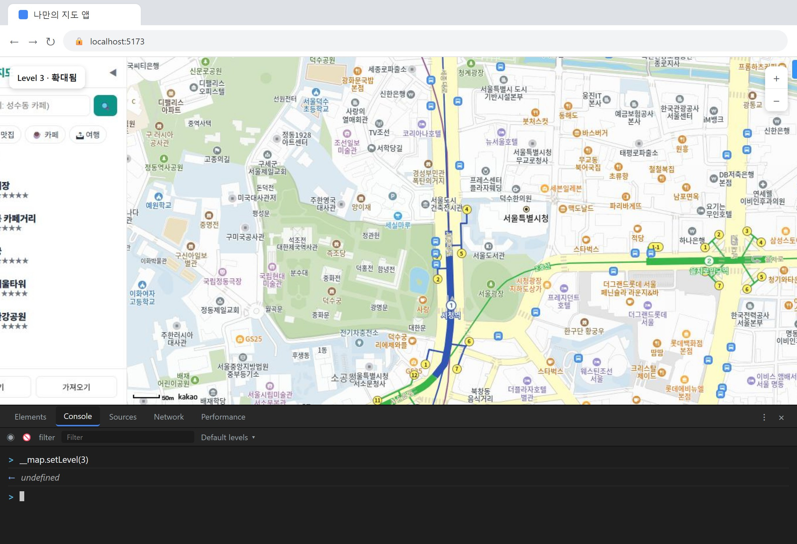
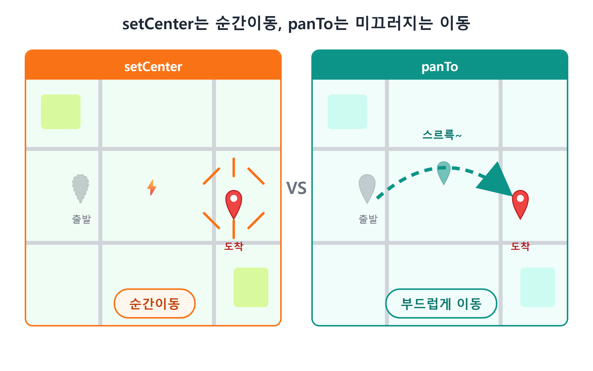
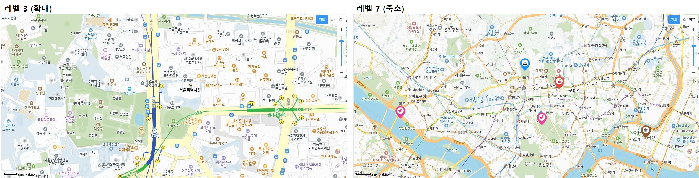
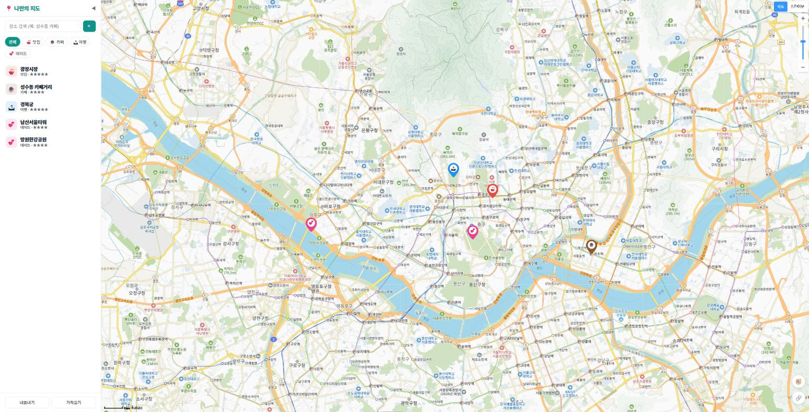
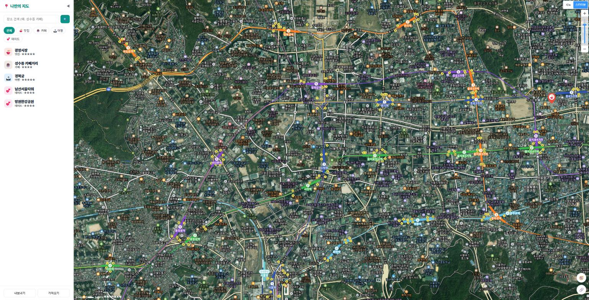
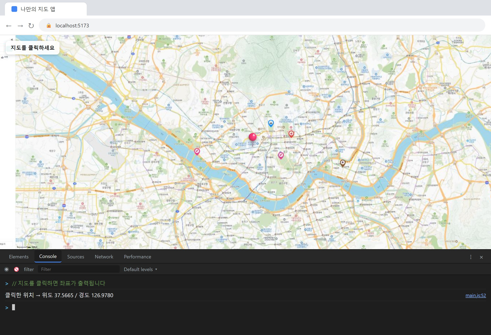

10장 지도 다루기¶
이 장에서 배우는 것
- 지도 객체를 "리모컨"처럼 다루는 방법을 배웁니다 — 콘솔에서 직접 지도를 움직여 봅니다
setCenter와panTo의 차이(순간이동 vs 부드러운 이동)를 이해합니다setLevel로 확대·축소하며 레벨 숫자와 축척 감각을 익힙니다- 지도에 MapTypeControl(지도 타입 버튼)과 ZoomControl(확대·축소 버튼)을 답니다
click,dragend이벤트로 지도의 신호를 받아, 클릭한 곳의 좌표를 콘솔에 찍어 봅니다
9장에서 우리는 브라우저 화면 가득 카카오지도를 띄웠습니다. 처음 지도가 뜨던 순간의 뿌듯함, 아직 생생하시죠? 그런데 지금 우리 지도는 솔직히 말해 구경만 하는 지도입니다. 마우스로 끌면 움직이고 휠을 돌리면 커지긴 하지만, 그건 카카오 SDK가 기본으로 해 주는 동작일 뿐, 우리가 코드로 지도에게 뭔가를 "시킨" 적은 아직 없습니다.
이번 장에서는 지도와 대화하는 법을 배웁니다. "부산으로 가", "더 확대해", "버튼 좀 달아" 같은 명령을 내리는 법, 그리고 반대로 지도가 보내오는 신호 — "사용자가 여기를 클릭했어요", "지도를 끌어서 이동했어요" — 를 받아 듣는 법입니다. 명령을 내리는 것이 메서드, 신호를 듣는 것이 이벤트입니다. 이 두 가지가 이번 장의 전부이고, 사실 앞으로 만들 모든 기능의 뿌리입니다. 11장의 마커도, 16장의 "지도 클릭해서 장소 추가"도 결국 오늘 배우는 메서드와 이벤트의 조합이거든요.
물론 우리는 바이브코딩으로 갑니다. 코드를 외워서 치는 게 아니라, Claude Code에게 시키고, 나온 코드를 함께 읽으며 "아, 이렇게 돌아가는구나"를 챙깁니다. 다만 이번 장에는 특별한 재미가 하나 있습니다. 브라우저 개발자도구 콘솔에서 지도를 실시간으로 조종해 보는 실습입니다. 코드를 고치고 저장하는 과정 없이, 명령을 한 줄 치면 눈앞의 지도가 즉시 반응합니다. 게임기 조이스틱을 처음 잡는 기분일 겁니다.
10.1 지도 리모컨 잡기 — Map 객체와 메서드¶
9장에서 지도를 만들 때 이런 코드를 봤습니다.
const map = new kakao.maps.Map(container, {
center: new kakao.maps.LatLng(37.5665, 126.978),
level: 7,
});
여기서 map이라는 변수에 주목하세요. new kakao.maps.Map(...)이 만들어 준 지도 객체가 이 변수에 담겨 있습니다. 지도 객체는 화면에 보이는 지도 그 자체이면서, 동시에 그 지도를 조작하는 리모컨입니다. TV 리모컨에 채널 버튼, 볼륨 버튼이 있듯이, 지도 객체에는 setCenter(중심 이동), setLevel(확대 레벨 변경), getCenter(현재 중심 알려줘) 같은 버튼이 잔뜩 달려 있습니다. 이런 버튼들을 프로그래밍 용어로 메서드1라고 부릅니다. map.setLevel(3)처럼 "객체 이름, 점, 메서드 이름, 괄호" 순서로 쓰면 버튼을 누르는 것과 같습니다.
그런데 이 리모컨, 지금은 코드 안에만 있어서 우리가 손으로 만져 볼 수가 없습니다. 코드를 고치고 저장해야만 결과를 볼 수 있다면 실험이 번거롭겠죠. 그래서 리모컨을 브라우저 콘솔로 꺼내 놓겠습니다. Claude Code에게 이렇게 시키세요.
🗣 이렇게 시키세요
main.js에서 만든 지도 객체를 브라우저 개발자도구 콘솔에서도 만질 수 있게 window에 노출해줘. 실험용이라는 주석도 달아줘.
Claude Code가 main.js의 지도 생성 코드 아래에 한 줄을 추가해 줍니다.
window는 브라우저의 전역 공간입니다. 여기에 붙여 둔 것은 개발자도구 콘솔에서 이름만 부르면 바로 잡을 수 있습니다. 이름 앞에 밑줄 두 개(__)를 붙인 것은 "이건 정식 기능이 아니라 개발용 뒷문"이라는 개발자들의 관례적인 표시입니다.
이제 개발 서버(npm run dev)가 켜진 상태에서 브라우저로 가서, F12 키를 눌러 개발자도구를 열고 Console 탭을 클릭하세요. 그리고 입력란에 이렇게 쳐 봅니다.
엔터를 치는 순간, 지도가 골목이 보일 정도로 확 확대됩니다. 코드 파일은 한 글자도 안 고쳤는데 지도가 움직였습니다. 이것이 콘솔의 힘입니다. 콘솔은 지금 열려 있는 페이지의 자바스크립트 세계에 직접 손을 넣을 수 있는 창구라서, 궁금한 명령을 즉석에서 실험하기에 최고의 놀이터입니다.

그림 10.1 — 콘솔에서 __map.setLevel(3)을 실행해 확대된 지도
이번엔 지도에게 물어봅시다. 콘솔에 다음을 쳐 보세요.
(37.5665..., 126.978...) 비슷한 좌표가 출력됩니다. set으로 시작하는 메서드는 값을 바꾸는 버튼, get으로 시작하는 메서드는 값을 알려주는 버튼입니다. 이 짝꿍 규칙은 카카오 SDK 전체에서 통합니다. setLevel이 있으면 getLevel도 있겠구나 — 맞습니다. __map.getLevel()을 쳐 보면 방금 바꾼 3이 나옵니다.
💡 팁
콘솔에서 __map.까지 치고 잠깐 기다리면, 이 객체가 가진 메서드 목록이 자동완성으로 주르륵 뜹니다. 방향키로 훑어보세요. 전부 외울 필요는 전혀 없습니다. "이런 버튼들이 있구나" 하고 구경해 두면, 나중에 Claude Code가 써 준 코드에서 낯선 메서드를 만나도 "아, 리모컨 버튼 중 하나구나" 하고 읽어 낼 수 있습니다.
10.2 중심 이동 — setCenter와 panTo¶
리모컨을 잡았으니 첫 명령은 역시 "이동"입니다. 지도의 중심을 옮기는 메서드는 두 개인데, 결과는 같아도 느낌이 완전히 다릅니다.
콘솔에서 직접 비교해 봅시다. 지도를 서울에 둔 상태에서, 먼저 순간이동입니다.
엔터를 치면 지도가 한순간에 부산 해운대로 바뀝니다. 중간 과정 없이 뚝. 화면이 순식간에 갈아 끼워지는 느낌입니다. 이번엔 지도를 다시 서울로 되돌린 뒤(방금 배운 setCenter로 37.5665, 126.978을 넣으면 됩니다), 가까운 곳으로 부드럽게 이동해 봅니다.
이번에는 지도가 강남역 쪽으로 스르륵 미끄러져 갑니다. 손으로 지도를 끌어 준 것 같은 자연스러운 애니메이션이죠. 이것이 panTo입니다. pan은 카메라를 옆으로 천천히 돌리는 촬영 기법을 뜻하는 영어 단어인데, 이름 그대로 카메라가 훑고 지나가듯 이동합니다.

그림 10.2 — setCenter는 순간이동, panTo는 미끄러지는 이동
둘을 언제 골라 쓸까요? 기준은 사용자가 이동 과정을 봐야 하는가입니다.
- setCenter — 페이지를 처음 열 때 시작 위치를 잡는 것처럼, 이동을 "보여줄" 필요가 없을 때. 애니메이션이 없어 즉각적입니다.
- panTo — 사용자가 목록에서 장소를 클릭해서 지도가 그리로 이동할 때처럼, "지금 이쪽으로 가고 있어요"를 느끼게 하고 싶을 때. 화면이 뚝 바뀌면 사용자는 방향 감각을 잃는데, 스르륵 이동하면 "아까 거기서 이쪽으로 왔구나"가 자연스럽게 전달됩니다.
실제로 우리 완성 앱의 코드에도 이 선택이 그대로 들어 있습니다. 사이드바에서 장소를 클릭하면 실행되는 함수가 map.panTo(pos)를 씁니다. 18장에서 이 코드를 다시 만나면 "아, 10장에서 배운 그거"라고 반가워하게 될 겁니다.
⚠️ 주의
panTo에는 숨은 규칙이 하나 있습니다. 이동할 거리가 현재 화면 크기보다 훨씬 멀면 — 예를 들어 서울에서 부산까지 — 애니메이션을 생략하고 그냥 순간이동합니다. 몇 초 동안 전국을 날아가는 애니메이션은 오히려 사용자를 답답하게 만드니, SDK가 알아서 생략해 주는 것입니다. "panTo를 썼는데 왜 스르륵 안 가지?" 싶을 때는 이동 거리가 너무 멀지 않은지 먼저 확인하세요.
그리고 좌표 이야기를 잠깐. 위 실습에서 쓴 35.1587, 129.1604 같은 숫자는 9장에서 배운 위도·경도입니다. "그런데 해운대 좌표를 내가 어떻게 알아?"라는 의문이 당연히 들 텐데, 정상적인 의문입니다. 좌표는 외우는 것이 아니라 얻는 것입니다. 이 장의 10.5절에서 클릭만 하면 좌표가 튀어나오는 장치를 만들 것이고, 12장에서는 카카오맵에서 좌표를 얻는 다른 방법도 배웁니다. 지금은 책에 적힌 좌표를 복사해 쓰면 충분합니다.
10.3 확대와 축소 — setLevel과 축척 감각¶
10.1절에서 이미 setLevel(3)을 눌러 봤습니다. 이번에는 이 레벨이라는 숫자의 감각을 제대로 잡아 봅시다.
카카오지도의 레벨은 1부터 14까지이고, 숫자가 작을수록 확대입니다. 처음엔 방향이 헷갈리기 쉬운데, "레벨은 높이"라고 기억하면 편합니다. 레벨 1은 드론이 건물 바로 위에 떠 있는 높이, 레벨 14는 인공위성에서 한반도를 내려다보는 높이입니다. 숫자가 커질수록 높이 올라가니까 넓게 보이고, 대신 자세한 것은 안 보입니다.
콘솔에서 사다리를 오르내려 봅시다. 하나씩 쳐 보면서 지도가 어떻게 변하는지 관찰하세요.
__map.setLevel(1) // 건물 출입구까지 보이는 최대 확대
__map.setLevel(3) // 동네 골목 수준
__map.setLevel(7) // 도시 전체가 한눈에 (우리 앱의 시작 레벨)
__map.setLevel(11) // 몇 개 도(道)가 함께 보이는 수준
__map.setLevel(14) // 한반도 전체
레벨이 1 커질 때마다 지도에 보이는 범위는 대략 두 배로 넓어집니다. 그래서 레벨 7과 레벨 8은 별 차이가 없어 보여도, 레벨 3과 레벨 10은 완전히 다른 세계입니다.

그림 10.3 — 같은 위치, 다른 레벨: 레벨 3(왼쪽)과 레벨 7(오른쪽)
우리 앱에서 레벨 선택이 실제로 쓰이는 자리를 미리 보면 감이 옵니다. 앱을 처음 열 때는 레벨 7로 시작합니다. 서울 전체가 보여서 "내 장소들이 어디쯤 흩어져 있나"를 조망하기 좋은 높이입니다. 반면 나중에 목록에서 장소 하나를 콕 집어 이동할 때는 레벨 4로 내려갑니다. 그 가게가 어느 골목 어느 모퉁이에 있는지 보여야 하니까요. 조망은 높게, 안내는 낮게 — 이 감각만 있으면 레벨 숫자 고르기는 어렵지 않습니다.
레벨에도 짝꿍 메서드가 있습니다. __map.getLevel()은 현재 레벨을 알려줍니다. 그리고 재미있는 실험 하나 — 콘솔에서 __map.setLevel(0)이나 __map.setLevel(99)를 쳐 보세요. 지도는 고장 나지 않고, 허용 범위 안의 가장 가까운 레벨에서 멈춥니다. SDK가 말도 안 되는 값을 알아서 걸러 주는 것인데, 이렇게 일부러 이상한 값을 넣어 보는 것도 훌륭한 공부입니다. 콘솔 실험은 부숴도 새로고침 한 번이면 원상복구되니까요.
10.4 지도에 버튼 달기 — MapTypeControl과 ZoomControl¶
지금까지는 개발자인 우리가 콘솔에서 지도를 조종했습니다. 그런데 우리 앱을 쓸 사용자는 콘솔을 열 줄 모릅니다. 사용자를 위한 조작 장치, 즉 컨트롤을 지도 위에 달아 줄 차례입니다. 카카오 SDK는 자주 쓰는 컨트롤 두 개를 기본으로 제공합니다.
- MapTypeControl — 일반 지도와 스카이뷰(위성 사진)를 전환하는 버튼
- ZoomControl — 확대(+)·축소(−) 버튼
카카오맵 앱에서 늘 보던 그 버튼들입니다. Claude Code에게 시켜 봅시다.
🗣 이렇게 시키세요
지도 오른쪽 위에 일반지도/스카이뷰 전환 버튼을, 오른쪽에 확대·축소 버튼을 달아줘. 카카오 SDK가 기본 제공하는 컨트롤을 사용해.
Claude Code가 지도 생성 코드 바로 아래에 두 줄을 추가합니다. 우리 앱의 실제 코드에서 그대로 가져온 모습입니다.
const map = new kakao.maps.Map(container, {
center: new kakao.maps.LatLng(37.5665, 126.978),
level: 7,
});
// 지도 타입 컨트롤 — 일반 지도 / 스카이뷰 전환 버튼
map.addControl(new kakao.maps.MapTypeControl(), kakao.maps.ControlPosition.TOPRIGHT);
// 줌 컨트롤 — 확대(+) / 축소(-) 버튼
map.addControl(new kakao.maps.ZoomControl(), kakao.maps.ControlPosition.RIGHT);
두 줄이 똑같은 구조라는 점부터 보세요. map.addControl(무엇을, 어디에) — 지도 리모컨의 addControl 버튼에 두 가지를 알려주는 형태입니다.
무엇을: new kakao.maps.MapTypeControl()은 지도 타입 전환 버튼을, new kakao.maps.ZoomControl()은 확대·축소 버튼을 새로 만듭니다. 9장에서 new kakao.maps.Map(...)으로 지도를 만들었던 것과 같은 new 문법입니다. 카카오 SDK의 부품들은 이렇게 new kakao.maps.부품이름()으로 찍어 냅니다.
어디에: kakao.maps.ControlPosition.TOPRIGHT는 오른쪽 위, RIGHT는 오른쪽 중앙을 뜻합니다. SDK가 정해 둔 위치 이름표 목록에서 골라 쓰는 방식이라, TOPLEFT, BOTTOMRIGHT처럼 이름만 바꾸면 자리를 옮길 수 있습니다. 방향을 영어로 조합한 이름들이니 읽기는 어렵지 않을 겁니다.
파일이 저장되면 Vite가 자동으로 새로고침해 줍니다. 브라우저를 보세요.

그림 10.4 — 컨트롤이 달린 지도: 오른쪽 위 지도 타입 버튼, 오른쪽 줌 버튼
오른쪽 위의 스카이뷰 버튼을 눌러 보세요. 지도가 위성 사진으로 바뀝니다. 서울시청의 실제 지붕, 도로의 실제 차선이 보입니다. 나만의 맛집 지도를 만들 때 "그 가게가 있는 건물이 진짜 어떻게 생겼더라"를 확인하기 좋은 기능입니다.

그림 10.5 — 스카이뷰로 전환한 지도
줌 컨트롤의 +/− 버튼도 눌러 보세요. 지도가 확대·축소됩니다. 눈치채셨나요? 이 버튼이 하는 일은 우리가 콘솔에서 친 setLevel과 정확히 같습니다. 버튼을 누르면 내부적으로 레벨이 1씩 오르내리는 것뿐입니다. 화려해 보이는 UI도 속을 들여다보면 우리가 아는 메서드를 대신 눌러 주는 껍데기인 경우가 많습니다. 이걸 알고 나면 SDK가 덜 신비롭고, 더 만만해집니다.
💡 팁
컨트롤을 단 뒤에도 마우스 휠 확대·축소와 드래그 이동은 그대로 동작합니다. 컨트롤은 조작 수단을 하나 더 얹을 뿐이고, 원래 방식은 그대로 남습니다. 참고로 이런 기본 조작을 막는 메서드도 있습니다. __map.setZoomable(false)를 콘솔에 쳐 보세요. 휠 확대가 잠깁니다(true로 되돌릴 수 있습니다). 지도를 배경 장식으로만 쓰고 싶은 페이지에서 쓰는 기능입니다.
10.5 지도의 말 듣기 — click과 dragend 이벤트¶
지금까지는 우리가 지도에게 명령했습니다. 이제 방향을 뒤집어, 지도가 우리에게 보내는 신호를 들어 봅시다.
사용자가 지도를 클릭하면, 지도는 "방금 누가 나를 클릭했어요, 위치는 여기예요"라는 신호를 쏩니다. 드래그를 끝내면 "지도 이동이 끝났어요"라는 신호를 쏩니다. 이런 신호를 이벤트2라고 부릅니다. 신호는 쏘는 것만으로는 아무 일도 일어나지 않습니다. 누군가 듣고 있어야죠. 그래서 우리는 리스너(listener, 듣는 사람)라는 함수를 등록해 둡니다. "click 신호가 오면 이 함수를 실행해 줘"라고 예약하는 것입니다.
백문이 불여일견, 만들어 봅시다. 이 장의 미니 실습이자, 16장에서 만들 "지도 클릭으로 장소 추가" 기능의 씨앗입니다.
🗣 이렇게 시키세요
지도를 클릭하면 클릭한 지점의 위도·경도를 콘솔에 출력해줘. 나중에 이 좌표로 장소를 추가할 거라 좌표를 정확히 얻는 게 목적이야.
Claude Code가 main.js에 다음 코드를 추가합니다.
// 지도 클릭 → 클릭한 지점의 좌표를 콘솔에 출력
kakao.maps.event.addListener(map, 'click', (e) => {
const lat = e.latLng.getLat();
const lng = e.latLng.getLng();
console.log('클릭한 곳:', lat, lng);
});
한 줄씩 읽어 봅시다.
kakao.maps.event.addListener(map, 'click', 함수)— 이벤트 예약 창구입니다. 세 가지를 알려줍니다. 누구를 지켜볼지(map), 어떤 신호를 기다릴지('click'), 신호가 오면 무엇을 실행할지(세 번째 자리의 함수). "지도에서 click이 일어나면 이 함수를 불러 줘"라는 예약입니다.(e) => { ... }— 신호가 왔을 때 실행될 함수입니다. 화살표(=>)로 쓰는 요즘 자바스크립트의 함수 표기법입니다. 중요한 것은 매개변수e인데, SDK가 신호와 함께 건네주는 사건 정보 꾸러미입니다. "클릭이 일어났다"는 사실만이 아니라 "어디를 클릭했는지"까지 이 꾸러미에 담겨 옵니다.e.latLng— 꾸러미 속에서 가장 중요한 내용물, 클릭 지점의 좌표 객체입니다. 9장에서 만난LatLng과 같은 종류라서,getLat()으로 위도를,getLng()으로 경도를 꺼낼 수 있습니다.console.log(...)— 괄호 안의 내용을 개발자도구 콘솔에 출력합니다. 화면에는 아무것도 안 보이지만 콘솔에는 찍힙니다. 개발 중에 값을 확인하는 가장 기본적인 도구입니다.
저장하고 브라우저로 가서, 콘솔을 열어 둔 채 지도 아무 곳이나 클릭해 보세요.
클릭할 때마다 콘솔에 좌표가 한 줄씩 찍힙니다. 시청 앞을 찍고, 한강을 찍고, 스카이뷰로 바꿔서 남산을 찍어 보세요. 지도 위의 모든 점이 숫자 두 개로 표현된다는 사실이 손끝으로 느껴질 겁니다. 10.2절에서 "해운대 좌표를 어떻게 알아?"라고 했던 의문도 풀렸습니다. 지도를 축소해서 해운대를 찾아 클릭하면, 좌표가 콘솔에 나타납니다.

그림 10.6 — 지도를 클릭할 때마다 콘솔에 찍히는 좌표
이벤트를 하나 더 들어 봅시다. 이번엔 dragend — 사용자가 지도를 끌다가 손을 뗀 순간의 신호입니다.
// 드래그가 끝나면 → 새 중심 좌표를 콘솔에 출력
kakao.maps.event.addListener(map, 'dragend', () => {
const c = map.getCenter();
console.log('지도 중심 이동:', c.getLat(), c.getLng());
});
구조가 아까와 똑같죠? 달라진 것은 신호 이름('dragend')과 실행 내용뿐입니다. 한 가지 차이가 있다면, 이번 함수에는 (e)가 없습니다. 드래그 종료 이벤트는 클릭과 달리 "어느 지점"이라는 정보를 줄 필요가 없어서, 대신 우리가 아는 리모컨 버튼 map.getCenter()로 새 중심을 직접 물어봤습니다. 명령(메서드)과 듣기(이벤트)가 한 코드 안에서 협업하는 모습입니다. 지도를 이리저리 끌어 보세요. 손을 뗄 때마다 새 중심 좌표가 콘솔에 찍힙니다.
이벤트 이름은 이 밖에도 zoom_changed(레벨이 바뀜), rightclick(우클릭) 등 여러 가지가 있습니다. 전부 외울 필요는 없습니다. "지도에 무슨 일이 생기면 신호가 오고, addListener로 들을 수 있다"는 구조 하나만 가져가면, 나머지는 필요할 때 Claude Code에게 "지도 우클릭 이벤트도 있어?"라고 물으면 됩니다.
💡 팁
콘솔에 좌표를 찍는 이 작은 장치는 "허접한 연습"이 아니라 실제 개발자들이 늘 쓰는 기법입니다. 새 기능을 만들 때 화면부터 만들지 않고, 먼저 console.log로 "값이 제대로 들어오는지"부터 확인하는 것이죠. 16장에서 우리는 오늘 만든 클릭 리스너의 console.log 자리를 "장소 추가 입력창 열기"로 바꿔 끼우게 됩니다. 뼈대는 이미 오늘 완성됐습니다.
10.6 마무리¶
이번 장에서 우리는 지도를 "보는 것"에서 "다루는 것"으로 넘어왔습니다. 콘솔이라는 놀이터에서 지도 리모컨을 마음껏 눌러 봤고, 그 감각 그대로 코드에 옮겼습니다.
정리하면 이렇습니다. 지도 객체는 리모컨입니다. setCenter는 순간이동, panTo는 스르륵 이동, setLevel은 높낮이 조절이고, get 짝꿍 메서드로 현재 상태를 물을 수 있습니다. 사용자를 위해서는 addControl로 지도 타입·줌 버튼을 달았습니다. 그리고 방향을 뒤집어 addListener로 지도의 신호를 들었습니다. 클릭 한 번에 좌표가 콘솔에 찍히는 순간, 여러분은 이 책 후반부를 지탱할 핵심 기술 하나를 손에 넣은 것입니다.
📌 핵심 요약
- 지도 객체(
map)는 메서드라는 버튼이 달린 리모컨입니다.window.__map으로 노출하면 콘솔에서 실시간 실험이 가능합니다. setCenter는 즉시 이동,panTo는 부드러운 이동입니다. 단, 이동 거리가 화면보다 훨씬 멀면panTo도 애니메이션을 생략합니다.- 레벨은 1(최대 확대)부터 14(한반도 전체)까지이며, 숫자가 작을수록 확대입니다. 조망은 높게, 안내는 낮게.
map.addControl(컨트롤, 위치)로 MapTypeControl(지도/스카이뷰 전환)과 ZoomControl(+/−)을 달 수 있습니다.kakao.maps.event.addListener(map, '이벤트이름', 함수)로 지도의 신호를 듣습니다.click이벤트의e.latLng에서getLat()/getLng()로 클릭 좌표를 얻습니다.
🤔 생각해보기
Q1. 사이드바 목록에서 장소를 클릭했을 때 지도가 그 장소로 이동하는 기능을 만든다면, setCenter와 panTo 중 무엇을 쓰겠습니까? 이유와 함께 적어 보세요.
✍️ ________
✍️ ________
Q2. click 이벤트 리스너에서는 e.latLng로 좌표를 얻었는데, dragend 리스너에서는 왜 map.getCenter()를 썼을까요?
✍️ ________
✍️ ________
✏️ 연습 문제
- 콘솔에서 여러분이 사는 동네를 지도 클릭으로 찾아 좌표를 얻고, 그 좌표로
__map.panTo(...)를 실행해 보세요. - 줌 컨트롤의 위치를
ControlPosition.RIGHT에서 다른 위치(예:BOTTOMRIGHT)로 바꿔 달라고 Claude Code에게 시켜 보고, 화면에서 확인해 보세요. - 레벨이 바뀔 때마다 콘솔에 현재 레벨을 출력하는
zoom_changed이벤트 리스너를 Claude Code에게 시켜서 추가해 보세요. 휠을 돌리면 콘솔에 숫자가 찍히나요?
🔎 더 찾아보기
kakao.maps.event.removeListener— 등록한 리스너를 떼어 내는 메서드. 리스너를 붙였다 뗄 수 있어야 하는 상황을 검색해 보세요.setBounds— 좌표 여러 개가 모두 화면에 들어오도록 중심과 레벨을 SDK가 알아서 맞춰 주는 메서드.지오코딩(geocoding)— "서울시청" 같은 주소·이름을 좌표로 바꾸는 기술. 15장의 장소 검색이 이 기술의 사촌입니다.
다음 장 예고 — 지도를 자유자재로 다룰 수 있게 됐으니, 이제 지도 위에 나의 흔적을 남길 차례입니다. 11장에서는 마커를 찍습니다. 첫 마커 하나에서 시작해 마커 여러 개를 반복문으로 찍고, 마지막에는 카테고리별 색과 이모지가 들어간 나만의 예쁜 핀 이미지로 갈아 끼웁니다. 우리 지도가 드디어 "나만의 지도"다워지기 시작합니다.